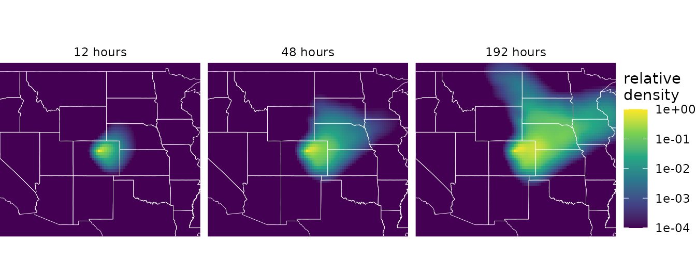
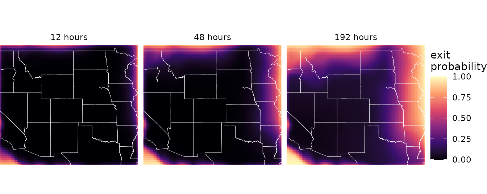

Connectivity models in depth
connectivity_models.Rmdwindscape models wind connectivity from a wind rose in two ways. A least-cost model finds the fastest route between places. A random walk model follows particles as they spread along all routes and (potentially) settle out of the air. The windsheds and pairwise connectivity articles use both; this article explains how they work, what their settings do, and what their limitations are, as a reference for choosing between them and setting them up.
library(windscape)
library(ggplot2)
rose <- windscape_example("wind_rose")
site <- cbind(-105, 40)
states <- map_data("state")
borders <- geom_path(data = states, aes(long, lat, group = group),
color = "white", linewidth = 0.15, inherit.aes = FALSE)
us <- coord_quickmap(xlim = c(-120, -90), ylim = c(30, 50), expand = FALSE)
facets <- theme(strip.text = element_text(margin = margin(4, 0, 4, 0)))Both models start from the same quantity: the
wind_rose‘s conductance from each grid
cell toward each of its eight neighbors, giving the average rate at
which wind moves material from the cell to that neighbor. With the
default trans = 1 in wind_rose() and winds in
m/s, conductance is in units of 1/hour, and the models’ times are in
hours. With other choices of trans, they are in relative
units, which still compare across places and directions.
Least-cost models
The wind graph
A least-cost model treats the grid as a network, or graph, in which each cell is linked to its eight neighbors. Each link’s conductance is the mean, over its two cells, of the rose’s conductance in the link’s direction, and the cost of crossing a link is the inverse of its conductance: the time to cover the distance between the two cell centers at the long-run average rate that wind moves material in that direction. The cost of a route is the sum of its links’ costs, and the least-cost route between two places is the one with the lowest total cost, found with Dijkstra’s algorithm.
In a downwind graph, links point the way wind carries material, for
measuring travel from a site. An upwind graph is the same network with
every link reversed, for measuring travel to a site. The least-cost
functions build the graph from a rose automatically.
wind_graph() builds it explicitly, which can save time when
making many calls on a large grid; pass the graph in place of the rose.
On a global grid spanning all 360 degrees of longitude, the graph links
cells across the -180/180 meridian; wind_graph()’s
wrap argument controls this, and the least-cost functions
pass it on through ....
Travel time as accessibility
Least-cost travel times are a measure of accessibility by wind, not a prediction of how long particles take to arrive. Each link’s conductance is a long-run average, including zero for all the time the wind spends blowing other ways. A travel time is therefore the time to follow the best route, including the time spent waiting, in effect, for the wind to blow roughly in the direction of travel. Real particles riding a single favorable wind event can arrive much faster, but most particles never arrive at all.
What travel times do capture well is the relative ease of wind transport between places, in consistent units that compare across places and directions. This makes them well suited to mapping windsheds and to comparing connectivity among pairs of sites.
Eight-neighbor bias
Routes move between neighboring cells in eight directions, so a route whose bearing falls between two neighbor directions has to zigzag, which overestimates its cost. For uniform wind on square cells, the error is largest, about 8 percent, for routes 22.5 degrees off a grid axis. On a longitude/latitude grid, cells narrow east-west toward the poles and the neighbor bearings become uneven, so the maximum error grows with latitude, to roughly 18 percent at 60 degrees. The bias is systematic rather than random, so it matters most when comparing routes in different directions from the same place.
pairwise_least_cost() places sites at their actual
locations rather than at cell centers, by linking them into the graph
with exact travel times through the local wind (see
?pairwise_least_cost). These links share the grid’s
directional bias, so results are consistent across distances.
Paths form trees
least_cost_paths() traces the routes themselves. The
fastest paths from one site to all other places form a tree: any part of
a fastest path is itself a fastest path, so once two paths meet, they
share the rest of their route back to the site. Heavily shared branches
are the main corridors of wind transport.
Because of this, the shape of the tree depends on the whole route, not just on local winds, and small differences in travel time can determine which branch a distant point joins. Because diagonal steps between cell centers can cross without passing through a common cell, two branches occasionally appear to cross.
Random walk models
From conductance to a random walk
A random walk model moves particle mass between neighboring cells at
rates set by the conductances. Formally, the conductances define a
continuous-time Markov chain, which windscape solves by
uniformization: it picks a time step, and converts each
cell’s conductances into the probabilities of moving to each neighbor,
or staying put, in one step. The default time step is the longest
possible, the time a particle spends in the cell with the highest total
conductance, which has zero probability of staying.
rw_max_step() reports it, before the latitude correction
described below shortens it somewhat:
rw_max_step(rose)
#> [1] 1.324253The timescale argument, between 0 and 1, shortens the
step. Mass moves only to neighboring cells each step, so in pulse mode,
which tracks a release step by step, shorter steps follow the
continuous-time process more accurately, at the cost of more iterations.
Stream mode results don’t depend on the time step at all.
Deposition and half-life
Particles leave the air at a constant rate, set by
half_life: the time, in hours of transport, after which
half of the airborne mass remains. Mass deposited in a cell makes up its
deposition. With half_life = Inf, nothing is
deposited, and particles stay airborne until they leave the domain.
The half-life sets how far material travels, and is the main biological choice in a random walk model. It represents everything that removes particles from the air: settling, impaction, mortality of propagules in transit, or loss of viability. Short half-lives suit heavy propagules or short-lived ones; long half-lives suit light, durable ones, or processes like gene flow that accumulate over many generations of stepwise movement. Here is the downwind windshed of the same site with three half-lives:
d <- do.call(rbind, lapply(c(12, 48, 192), function(h){
w <- random_walk(rose, site, mode = "stream", half_life = h)
data.frame(fortify(w)[c("x", "y", "deposition")], half_life = paste(h, "hours"))
}))
d$half_life <- factor(d$half_life, levels = unique(d$half_life))
d$deposition <- d$deposition / ave(d$deposition, d$half_life, FUN = max)
ggplot(d, aes(x, y)) +
geom_raster(aes(fill = deposition)) +
borders +
facet_wrap(~half_life) +
scale_fill_viridis_c(name = "relative\ndensity", trans = "log10",
limits = c(1e-4, 1), oob = scales::squish) +
us + theme_void() + facets
Because time is in hours of transport at the rose’s average wind speeds, half-lives, like least-cost travel times, describe accessibility rather than real time aloft.
Pulse and stream modes
random_walk() has two modes:
-
Pulse mode releases particles once and follows them
step by step for
itersteps, recording the airborne and cumulative deposited mass at the steps inrecord. It shows how a release drifts and spreads over time. - Stream mode releases particles continuously and returns the steady state, where release is balanced by deposition and loss across the domain edges. It’s computed directly, with a sparse linear solve, rather than by simulating forward.
The two are closely linked. Particles move independently, and the
same rose applies at every step, so the steady state under continuous
release equals the total, over all time, of a single release. Stream
deposition is therefore where a single release eventually
lands, which pulse mode approaches as it runs:
pulse <- random_walk(rose, site, mode = "pulse", half_life = 48, iter = 200,
record = c(50, 200), density = FALSE)
stream <- random_walk(rose, site, mode = "stream", half_life = 48, density = FALSE)
terra::global(pulse$deposition, "sum", na.rm = TRUE) # cumulative deposition at steps 50 and 200
#> sum
#> iter50 0.4885802
#> iter200 0.9315914
terra::global(stream$deposition, "sum", na.rm = TRUE)
#> sum
#> deposition 0.9996804Each step here is 0.93 hours (iter_length()), so after
50 steps, about two days, roughly half the release has been deposited,
as the 48-hour half-life implies. The stream solution gives where all of
it eventually lands; the small remainder leaves the domain. With
density = FALSE, values are per grid cell, so they sum to
totals, as here; the default, density = TRUE, divides by
cell area to give values per km^2. That removes the effect of cell size
on how much a cell receives, and so the bias toward low latitudes, where
cells are larger (but see Resolution below). Most windshed and pairwise
analyses use stream mode.
Direction
A downwind walk follows particles from where they’re released. An upwind walk asks the reverse question, where particles arriving at a site come from, and is computed with the adjoint of the downwind process rather than by reversing the wind. The two are exactly consistent: the upwind value at a source equals the downwind value at the receptor, for any source and receptor.
Upwind stream walks with a finite half-life return
two layers. deposition describes how
likely a particle released in each cell is to be deposited at the site.
origin give the share of particles deposited at the site
that came from each cell, which also depends on how much each cell
releases (source). The windsheds article compares them.
Latitude correction
On a longitude/latitude grid, cells narrow east-west toward the poles. Conductances account for this, so material drifts at the right speed at every latitude. But in a random walk on a grid, the spread of material comes partly from the hops between cell centers themselves, and east-west hops are shorter than north-south ones at high latitudes, which compresses east-west spread: without correction, to roughly 0.86, 0.70, and 0.49 times north-south spread at 30, 45, and 60 degrees latitude.
latitude_correction = TRUE, the default, adds equal
conductance toward each cell’s east and west neighbors, restoring
east-west spread to what the same winds would produce on square cells,
without changing drift. The added conductance shortens the time step
somewhat, which is why the step reported by random_walk()
is shorter than rw_max_step(). See the Latitude correction
section of ?random_walk for details and limits.
Resolution
The same effect makes random walk results depend on grid resolution:
a walk’s spread comes from the hops between cells, and its rate is
proportional to hop length, so walks on coarser grids spread more (see
turbulence below). Downscaling a rose with
downscale() narrows the spread (by 30 to 50 percent, in one
test, for a factor of 4), so it changes the model as well as the grid.
Results at different resolutions aren’t directly comparable, so choose
one resolution for an analysis and treat it as part of the model.
Least-cost travel times depend on resolution much less.
Domain edges
The edges of the domain are absorbing: mass that disperses off the
grid, or into NA cells, is lost and never returns. Values
near the edges are therefore biased low, since they receive nothing from
beyond the edge. In stream mode with a finite half-life,
random_walk() reports the fraction of released mass lost
across the edges as a message, which gives a quick check:
w <- random_walk(rose, site, mode = "stream", half_life = 192)
#> iteration timestep: ~0.935
#> decay per step (lambda): ~0.00336
#> (timestep and half_life are in hours IF trans == 1 and wind_field units are m/s)
#> fraction of released mass lost across domain edges: 0.0586With a 192-hour half-life, about 6 percent of this site’s release leaves the domain, compared with a few hundredths of a percent with 48 hours.
rw_exit_prob() maps the probability that mass released
in each cell leaves the domain before being deposited. It bounds the
effect of the domain boundary on any result that’s a probability over
particles released from a cell, whatever the winds beyond the edge: for
example, with density = FALSE, an upwind walk’s
deposition at a cell is off by at most that cell’s exit
probability, and the values in a row of
pairwise_random_walk() output are off by at most the exit
probability of the row’s site, in total. Exit probabilities are highest
along the downwind margins, and grow with the half-life:
exit <- c(rw_exit_prob(rose, half_life = 12), rw_exit_prob(rose, half_life = 48),
rw_exit_prob(rose, half_life = 192))
names(exit) <- paste(c(12, 48, 192), "hours")
d <- as.data.frame(exit, xy = TRUE)
d <- data.frame(d[c("x", "y")], half_life = rep(names(exit), each = nrow(d)),
exit = unlist(d[names(exit)], use.names = FALSE))
d$half_life <- factor(d$half_life, levels = names(exit))
ggplot(d, aes(x, y)) +
geom_raster(aes(fill = exit)) +
borders +
facet_wrap(~half_life) +
scale_fill_viridis_c(name = "exit\nprobability", option = "magma", limits = c(0, 1)) +
us + theme_void() + facets
The usual remedy is to buffer the domain: download wind for a region extending several decay lengths beyond the study area, until exit probabilities in the study area are acceptably small. Exit probabilities can also screen results, by masking cells above a tolerance:
up <- random_walk(rose, site, mode = "stream", direction = "upwind", half_life = 48)
reliable <- terra::mask(up$deposition, rw_exit_prob(rose, half_life = 48) > 0.01, maskvalues = TRUE)With half_life = Inf, all mass eventually leaves across
the edges, so stream results measure connectivity within the chosen
domain and depend on its extent. See ?rw_exit_prob for
which results the bound covers.
A global grid has no east or west edge to buffer: the random walk
functions detect a grid spanning all 360 degrees of longitude and join
its two sides at the -180/180 meridian, as the least-cost model does, so
only the north and south edges are absorbing. The wrap
argument overrides this. Paths from either model that cross the meridian
are split there into separate trails, so they don’t streak across the
map.
Flux and paths
With flux = TRUE, a stream walk also returns the net
flux of material through each cell: the flow to each neighbor minus the
flow back, as a vector. Where residence and
deposition describe the shape of a windshed, flux describes
the transport that produces it. Each cell’s net outflow equals its
release minus its deposition.
random_walk_paths() traces streamlines of this flux,
giving the average routes along which material moves. These
paths involve no randomness. A random walk describes the spread
of a cloud of particles, each zigzagging unpredictably; the paths follow
the cloud’s net flow, which is deterministic. Each path is the mean
route of the material moving along it, and by default the paths are
placed so that each carries an equal share of the released material.
Self-retention
A stream walk’s value at a source cell includes the source’s own release, which is often by far the largest contribution to it. Some analyses need to leave that contribution out, for example when predicting the occurrence of a species at each occupied cell from the propagule pressure produced by all the other occupied cells, without each cell predicting itself.
rw_self_retention() computes each source cell’s
contribution to its own residence, per unit of release, so it can be
subtracted. Exact values take one sparse solve per cell, practical for a
set of occupied cells; the default is a fast approximation, a lower
bound that counts only mass that never leaves the cell:
rw_self_retention(rose, half_life = 48, cells = site) # approximation
#> self_retention
#> 2.302132
rw_self_retention(rose, half_life = 48, cells = site, exact = TRUE)
#> [1] 3.234574For a release raster init, the leave-one-out residence
is residence - init * G, where G is the
self-retention at each source (with density = FALSE, so
that both are per cell), and leave-one-out deposition is
log(2) / half_life times that; see
?rw_self_retention.
Turbulence
The air is always turbulent, but windscape models only the resolved wind: the mean flow within each grid cell and time step of the wind data, summarized over time in the wind rose. The two models use it differently.
A least-cost model is purely advective. It traces the single most favorable route through the wind rose, with no dispersion at all, so turbulence has no natural place in it.
A random walk spreads material, but it’s worth being precise about where that spread comes from. Each hop, a particle moves to a neighboring cell in a direction drawn from the cell’s conductances, independently of its previous hops. The wind rose’s mix of directions sets the shape of the spread: which directions it favors, and how elongated it is. But its magnitude is set by the length of the hops. A walk’s effective diffusivity is about half the wind speed times the hop length, so it scales with cell size. Even in perfectly steady wind, where the resolved flow alone would carry particles together without spreading, a walk spreads them: for a steady 5 m/s wind on the example grid, with cells about 30 km across, the walk’s along-wind diffusivity is about 90,000 m^2/s, and halves each time the cell size halves. For the example rose’s real winds at the site used above, it’s about 17,000 to 43,000 m^2/s, depending on direction, and also halves with cell size.
How does this compare with the real atmosphere? At the scale of reanalysis grid cells, the walk’s diffusivity is comparable to or larger than typical estimates of horizontal dispersion by small-scale turbulence, so adding that turbulence explicitly would change results little. Large-scale variability is a different matter. Real winds persist, often for hours to days, carrying particles far in one direction before turning, whereas the wind rose keeps the mix of directions but discards their sequence, and the walk redraws its direction every hop. So the spread of a single release in real weather can be much broader than the walk’s. The random walk is best read as a model of average connectivity under the wind regime, at a resolution that is part of the model, rather than as a simulation of individual dispersal events.
Vertical turbulence isn’t represented either. Updrafts that lift
particles high into the atmosphere drive much long-distance dispersal,
and the chance of uplift depends on a particle’s settling velocity
relative to the strength of turbulence. In windscape, deposition is a
constant rate set by half_life, the same everywhere and in
every wind. Choosing wind data from a height that matches where
dispersal happens (see the wind data
article) is the main way to account for the vertical dimension.
Choosing a model
The two models describe the same wind rose in different ways, and suit different questions:
| Least-cost | Random walk | |
|---|---|---|
| Describes | The fastest route between places | The spread of material along all routes |
| Values | Travel time (hours), or its inverse | Deposition or residence, per km^2 |
| Key setting | trans |
trans, half_life
|
| Deposition in transit | No | Yes |
| Sites | At their actual locations
(pairwise_least_cost()) |
Treated as their grid cells |
| Resolution dependence | Weak | Moderate; part of the model |
| Domain edges | Routes are confined to the domain | Mass leaving is lost; check with
rw_exit_prob()
|
| Paths |
least_cost_paths(): fastest routes, which
form a tree |
random_walk_paths(): mean routes of
material |
Least-cost models are simpler, with fewer settings, and suit questions about accessibility: which places wind connects most readily, and in which directions. Random walk models are a closer analog of dispersal, and suit questions about how much material moves between places, where deposition along the way matters, at the cost of choosing a half-life and minding the domain edges and grid resolution. Where it isn’t clear which applies, running both and comparing the results is a useful check on how much conclusions depend on the model.